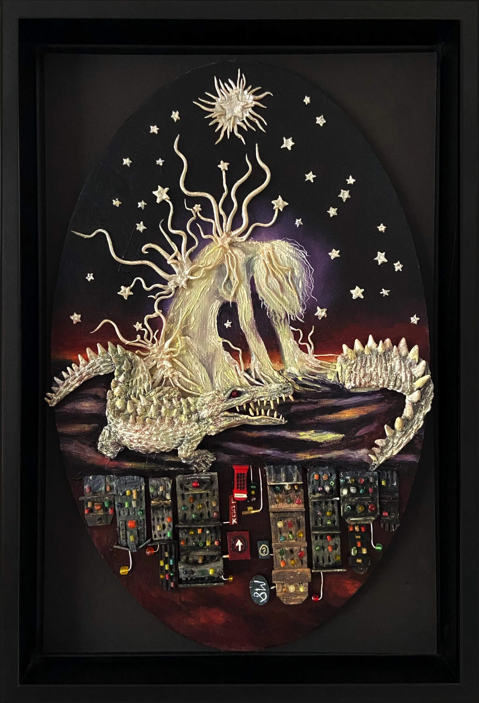
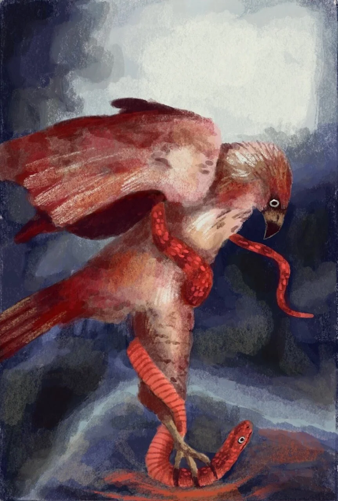
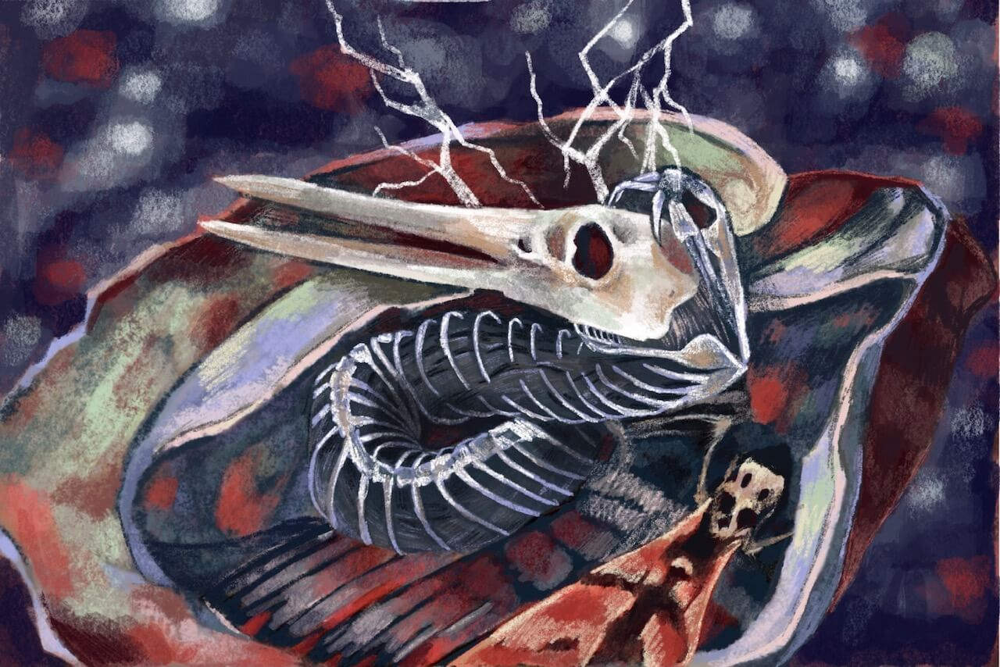
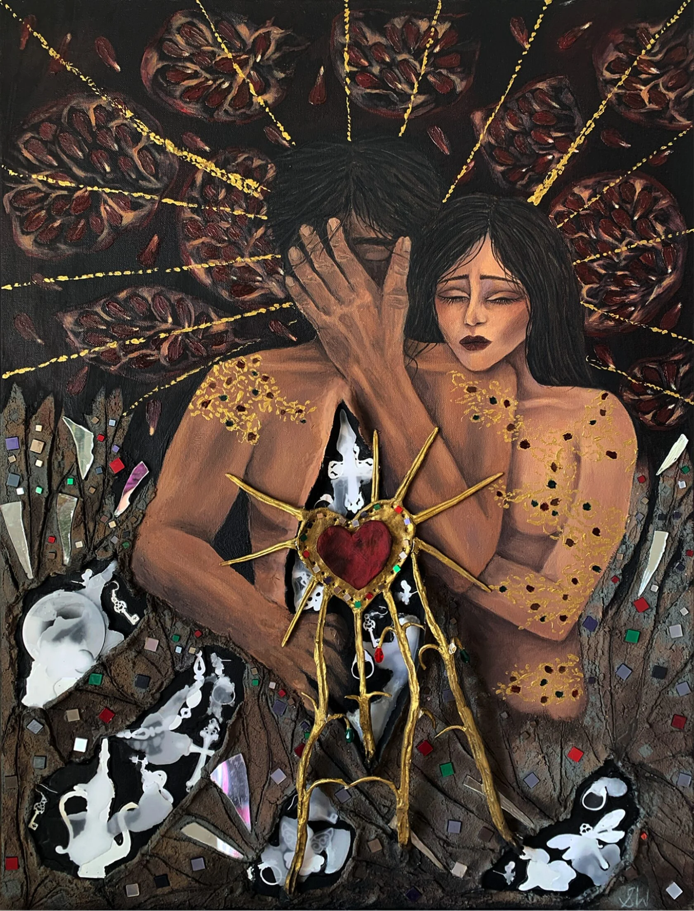
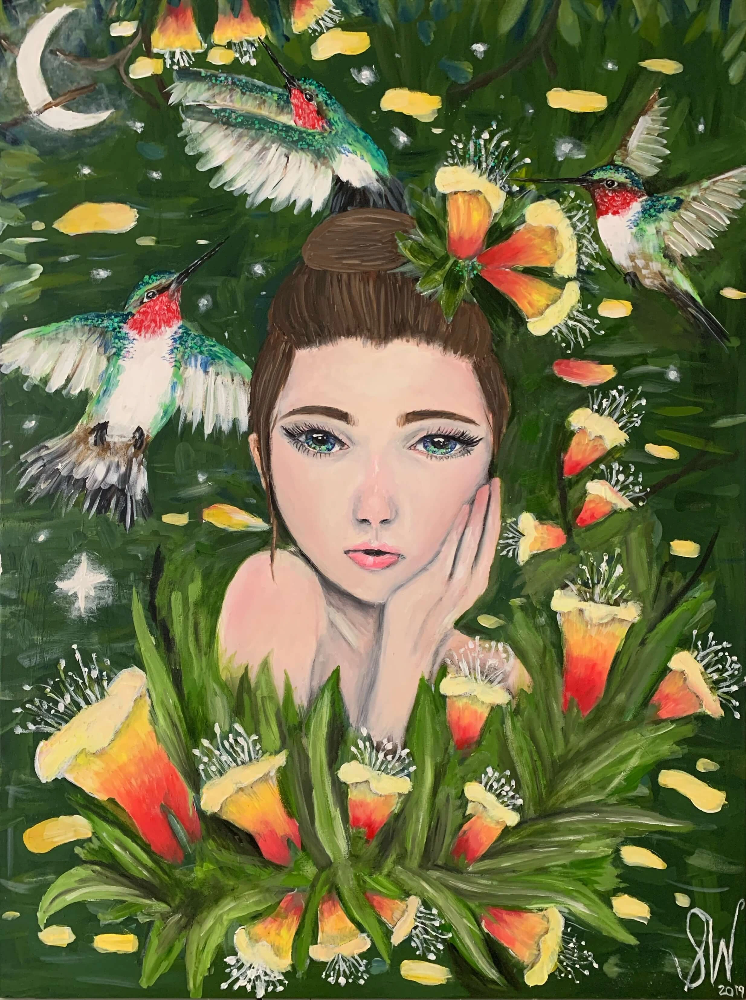

StephanieWorrell
View the worksStephanie Worrell is a London-based artist working across painting, drawing and mixed media. Her work looks at portraiture, fragile things and the quiet moments that stay with us.
Meet the artist